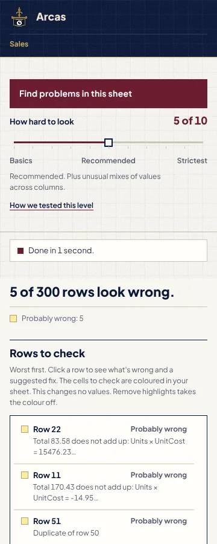

Hi, I'm John Nguyen. I made Arcas.
In business class we used Excel every week. I saw that the longer I typed, the more mistakes I made. Everyone gets tired. Arcas does not. It checks every row the same way and shows you what to fix.
Arcas reads every cell of your Excel sheet, catches the typo, the broken formula and the number that doesn't add up, and hands you the fix.
Arcas runs on a Windows computer. Open this page on that computer to download it.
Free for Windows with desktop Excel.Swipe the table sideways to see each order's date and region.
| Row | OrderDate | Region | Units | UnitCost | Total | Finding |
|---|---|---|---|---|---|---|
| 4 | 2026-01-08 | Central | 54 | 3.99 | 215.46 | |
| 2026-01-09 | East | 61 | 4.99 | 304.39 | Total jumped sharply near 2026-01-09 | |
| ⋯ | ||||||
| 10 | 2026-01-14 | Central | 50 | 1.99 | 99.50 | |
| 2026-01-15 | East | -5 | 2.99 | 170.43 | Total doesn't equal Units × UnitCost · Fix: Units 57 | |
| 12 | 2026-01-16 | West | 41 | 3.99 | 163.59 | |
| ⋯ | ||||||
| 20 | 2026-01-24 | East | 51 | 3.99 | 203.49 | |
| 2026-01-25 | West | 58 | 4.99 | 289.42 | Total jumped sharply near 2026-01-25 | |
| 2026-01-26 | Central | 7777 | 1.99 | 83.58 | Total doesn't equal Units × UnitCost · Fix: Units 42 | |
| 23 | 2026-01-27 | East | 49 | 2.99 | 146.51 | |
| ⋯ | ||||||
| 30 | 2026-02-03 | West | 52 | 1.99 | 103.48 | |
| 2026-02-04 | east | 59 | 2.99 | 176.41 | "east " looks like "East" · Fix: East | |
| ⋯ | ||||||
| 2026-02-14 | East | 60 | 4.99 | 299.40 | Total jumped sharply near 2026-02-14 | |
| ⋯ | ||||||
| 2026-03-02 | West | 57 | 4.99 | 284.43 | Total jumped sharply near 2026-03-02 | |
In the pane: "Total 170.43 does not add up: Units × UnitCost = -14.95 Units is -5, below its usual limit of 0"
In the pane: "Total 83.58 does not add up: Units × UnitCost = 15476.23 Units is 7777, above its usual limit of 105 Units breaks its usual pattern near 2026-01-26 Units jumped sharply near 2026-01-26"
In the pane: "Region "east " looks like "East" (same word, different capitals/spaces)"
In the pane: "Total jumped sharply near 2026-01-09"
In the pane: "Total jumped sharply near 2026-01-25"
In the pane: "Total jumped sharply near 2026-02-14"
In the pane: "Total jumped sharply near 2026-03-02"
Step 1 of 3: reading your sheet…
On your PC, a sheet this size takes moments and needs no internet.
Scan complete: 0 probably wrong, 4 worth a check
With the three fixes accepted, the pane reads "Nothing clearly wrong in 60 rows. 4 are worth a quick check." Those are rows 5, 21, 41 and 57, the jumps in Total: a real order can jump, so they stay for you to judge.
| Row | OrderDate | Region | Units | UnitCost | Total | Finding |
|---|---|---|---|---|---|---|
| 4 | 2026-01-08 | Central | 54 | 3.99 | 215.46 | |
| 5 | 2026-01-09 | East | 61 | 4.99 | 304.39 | Total jumped sharply near 2026-01-09 |
| ⋯ | ||||||
| 10 | 2026-01-14 | Central | 50 | 1.99 | 99.50 | |
| 11 | 2026-01-15 | East | 57 | 2.99 | 170.43 | Fixed: Units 57, was -5 |
| 12 | 2026-01-16 | West | 41 | 3.99 | 163.59 | |
| ⋯ | ||||||
| 20 | 2026-01-24 | East | 51 | 3.99 | 203.49 | |
| 21 | 2026-01-25 | West | 58 | 4.99 | 289.42 | Total jumped sharply near 2026-01-25 |
| 22 | 2026-01-26 | Central | 42 | 1.99 | 83.58 | Fixed: Units 42, was 7777 |
| 23 | 2026-01-27 | East | 49 | 2.99 | 146.51 | |
| ⋯ | ||||||
| 30 | 2026-02-03 | West | 52 | 1.99 | 103.48 | |
| 31 | 2026-02-04 | East | 59 | 2.99 | 176.41 | Fixed: Region East, was "east " |
| ⋯ | ||||||
| 41 | 2026-02-14 | East | 60 | 4.99 | 299.40 | Total jumped sharply near 2026-02-14 |
| ⋯ | ||||||
| 57 | 2026-03-02 | West | 57 | 4.99 | 284.43 | Total jumped sharply near 2026-03-02 |
The same word typed two ways, such as "east " and "East". In the sample: Row 31
A cell that breaks its column's formula, or a number typed over one.
A figure typed 10 or 100 times too big, or a total that doesn't add up. In the sample: Row 22
A date far from the rest, or a sudden jump in a series over time. In the sample: Row 5
An empty cell in a column that is otherwise filled, and a row typed twice.
On a sheet about people, whether flags and outcomes are even across groups.

Hi, I'm John Nguyen. I made Arcas.
In business class we used Excel every week. I saw that the longer I typed, the more mistakes I made. Everyone gets tired. Arcas does not. It checks every row the same way and shows you what to fix.
Call me at (770) 265-9930, email me at john4000.nguyen@gmail.com, or write with the form below.
Mistakes were planted in test sheets, and Arcas was asked to find them.
On a work computer, ask your IT team first. Arcas installs only on a Windows account that is an administrator on that PC.
Free for any number of people. Open source under the MIT License.
Your browser may say Arcas.exe isn't commonly downloaded. Click the three dots beside it, then Keep, then Keep anyway. It says this because the file is new and not signed yet.
shown on the release pageIn PowerShell, in your Downloads folder, run the line below and compare the result with the SHA-256 in the list above. If they differ, delete the file and download it again.Get-FileHash .\Arcas.exe -Algorithm SHA256
To skip the blue box, right-click the file before you open it, click Properties, tick Unblock and click OK.
No Trusted Locations or macro settings to change: the add-in has no macros. The installer registers its add-in folder as a trusted catalog for your account, and uninstall removes it. To update, download again and double-click; settings and key stay.
Arcas.exe is not code-signed yet: it has applied to the SignPath Foundation. Read the code signing policy.
The support page answers more, from the install to the log.
Yes, for any number of people, at home or at work. There are no seats, no licence server and no account, and the code is open source under the MIT License.
No, not when it checks your sheet. Arcas does all its checking on your own computer and sends nothing. Part of your sheet leaves your computer only when you click Ask AI or Check words with AI. Then it goes to Google, through John's own server first unless you saved your own Google key. The privacy page lists exactly what goes.
A Windows 10 or 11 PC, 64-bit, with desktop Excel for Microsoft 365, and a Windows account that is an administrator on that PC. It does not run on a Mac or in Excel on the web, and Excel 2021 and 2024 are not tested yet. To check, open Excel and click File > Account. If it says Microsoft 365 under Product information, you have the right Excel. Click About Excel: the first line ends with 64-bit or 32-bit.
No. A suggested fix changes nothing until you click Accept, and Dismiss skips it. Auto-fix, which stays off until you turn it on, fixes by itself only slips of capitals and spaces, such as "east " where the column says "East", never a number, and Undo auto-fixes puts them back.
Write to him with the form on this page, which opens your message on GitHub, email him at john4000.nguyen@gmail.com, or call him at (770) 265-9930. John replies within 2 business days.
John replies within 2 business days.